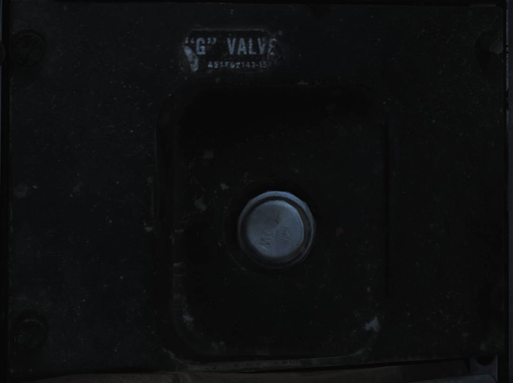
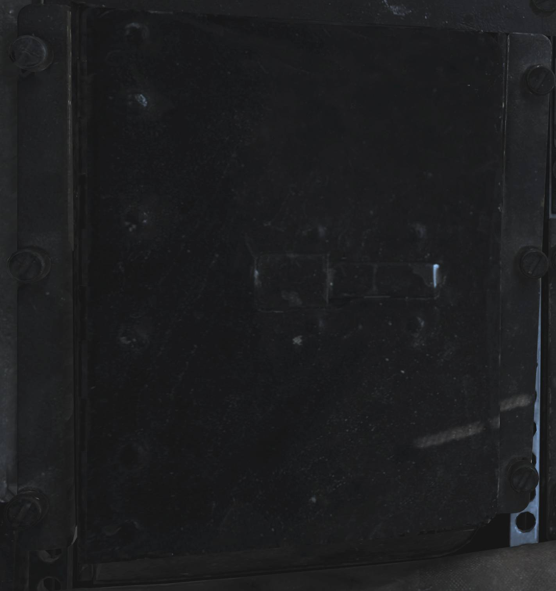
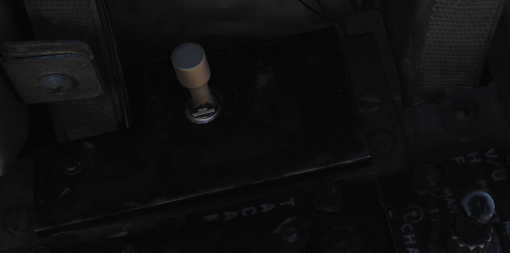
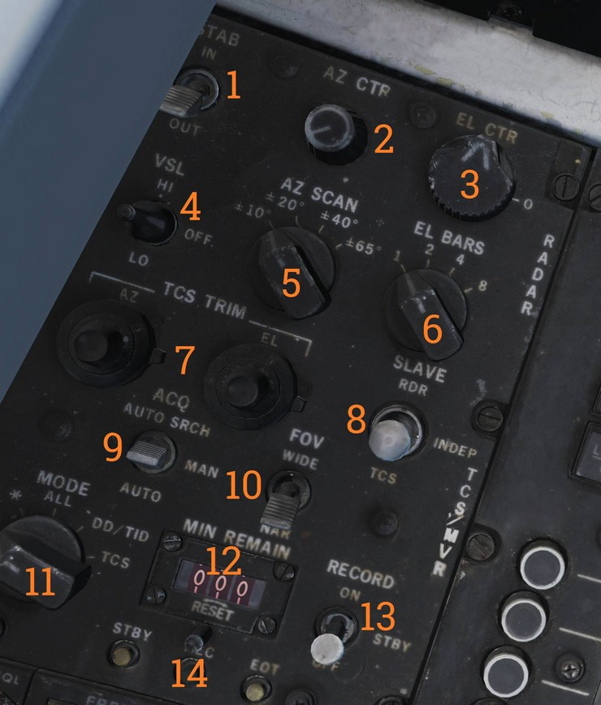

Left Side Console
G-Valve Button

The G-valve button is pressed to test inflation of the g-suit.
Oxygen-Vent Airflow Control Panel

Panel controlling ventilation airflow and oxygen supply to the RIO.
Vent Airflow Dial
The VENT AIRFLOW dial controls airflow through the pressure suit or seat cushions when no pressure suit is worn.
Oxygen Switch
The OXYGEN switch controls oxygen flow to the RIO oxygen mask.
- ON - Oxygen supplied to mask.
- OFF - Oxygen flow shut off.
Data Stowage Compartment

The data stowage compartment provides storage space for equipment, documents, and mission briefing materials.
TACAN Control Panel

TACAN control panel allowing the RIO to operate TACAN when assigned command.
Channel Selector
The dual rotary selector (
- Outer dial - selects the first two digits.
- Inner dial - selects the final digit.
GO / NO-GO Indicator Lights
The GO and NO-GO lights (
BIT Button
The BIT button (
Mode Switches
The MODE switches (
INVERSE mode is not functional.
TACAN Volume Knob
The VOL knob (
TACAN Mode Selector
The MODE knob (
Available modes are:
- OFF - TACAN off.
- REC - Receive only.
- T/R - Transmit and receive with range readout.
- A/A - Air-to-air TACAN.
- BCN - Beacon mode (not functional).
Communication / TACAN Command Panel

Panel controlling radio selection, antenna routing, and TACAN command authority.
Transmitter Select Switch
The XMTR SEL switch (
- UHF 1 - ARC-159.
- BOTH - Both radios.
- V/UHF 2 - ARC-182.
V/UHF 2 Antenna Switch
The V/UHF 2 ANT switch (
- UPR - Upper antenna.
- LWR - Lower antenna.
TACAN Command Switch
The TACAN CMD switch (
UHF 1 Volume Knob
The UHF 1 VOL knob (
KY Mode Switch
The KY MODE switch (
The simulated aircraft uses KY-28; this switch is non-functional.
V/UHF 2 (AN/ARC-182) Radio

Secondary VHF/UHF radio providing voice communications.
V/UHF 2 Volume Knob
The VOL knob (
Squelch Switch
The SQL switch (
Frequency Select Switches
The frequency select switches (
Frequency / Channel Display
The FREQ/(CHAN) display (
UHF Selector Switch
The UHF switch (
Brightness Knob
The BRT knob (
Mode Selector Knob
The MODE knob (
Frequency Mode Knob
The outer frequency mode dial (
Channel Select Knob
The inner CHAN SEL knob (
💡 HAVE QUICK anti-jam functionality is not implemented in DCS.
KY-28 Control Panel

Encryption control panel for secure voice communications.
Zeroize Switch
The ZEROIZE switch (
Power-Mode Switch
The power-mode switch (
Radio Select Switch
The radio select switch (
Radar Beacon Control Panel

Panel controlling the AN/APN-154 radar beacon.
Beacon Mode Selector
The MODE selector (
- SINGLE - Responds to single-pulse interrogation.
- DOUBLE - Responds to double-pulse code.
- ACLS - Enables ACLS augmentation for carrier landings.
ACLS Test Button
The ACLS TEST button (
- Illuminates during successful test.
- Flashes when SPN-42 radar sweep is detected.
- Steady illumination indicates radar lock-on for ACLS.
Power Switch
The PWR switch (
- PWR - Beacon fully active.
- STBY - Warm-up mode; ACLS replies enabled if MODE is ACLS.
- OFF - Beacon off.
Liquid Cooling Control Panel

LIQ COOLING switch controlling the liquid cooling system for the AWG-9 and AIM-54. The AWG-9 circuit can be enabled independently of the AIM-54. This switch needs to be enabled for the respective system before AWG-9 operation or AIM-54 missile preparation.
ICS Control Panel

Intercommunication system control panel.
ICS Volume Knob
The VOL knob (
Amplifier Selection Knob
The amplifier selection knob (
- B/U - Backup amplifier.
- NORM - Normal amplifier.
- EMER - Emergency amplifier using pilot’s amplifier and volume settings. Disables RIO-only audio sources.
ICS Function Switch
The ICS switch (
- RADIO OVERRIDE - ICS audio overrides radio audio.
- HOT MIC - Enables continuous intercom without PTT.
- COLD MIC - Intercom only when PTT is pressed.
Eject Command Lever

The EJECT CMD lever determines ejection logic when the RIO ejects.
- PILOT (lever forward) - Only the RIO ejects.
- MCO (lever aft) - Both crewmembers eject.
Pilot-initiated ejection always ejects both crew members.
Sensor Control Panel

Control panel for radar scan geometry, TCS operation, and AVTR recording.
Stabilization Switch
The STAB switch (
Azimuth Center Knob
The AZ CTR knob (
Elevation Center Knob
The EL CTR knob (
VSL Switch
The VSL switch (
- VSL HI
- VSL LO
Azimuth Scan Knob
The AZ SCAN knob (
Elevation Bars Knob
The EL BARS knob (
TCS Trim Knobs
The TCS TRIM knobs (
Slave Switch
The SLAVE switch (
Acquisition Switch
The ACQ switch (
- AUTO SRCH
- MAN
- AUTO
Field of View Switch
The FOV switch (
- WIDE
- NAR
AVTR Mode Knob
The MODE knob (
Minutes Remaining Display
The MIN REMAIN display (
Record Switch
The RECORD switch (
- OFF
- STBY
- ON
AVTR Indicator Lights
The indicator lights (
- STBY
- EOT (end of tape)
- REC
Computer Address Panel (CAP)

The Computer Address Panel is used to enter data into the Weapon Control System.
Clear Button
The CLEAR button (
Enter Button
The ENTER button (
Prefix and Numerical Buttons
The numerical and prefix buttons (
Message Selection Buttons
The MESSAGE buttons (
Message Indicator Drum
The MESSAGE drum (
Program Restart Button
The PRGM RESTRT button (
Category Selector Knob
The CATEGORY knob (
Tune Disable
The TUNE DSBL function (
💡 All CAP buttons include indicator lights that illuminate based on selected function.